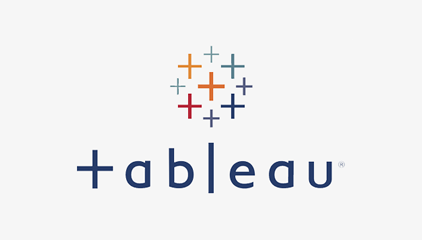

This project involved performing EDA, feature engineering and machine learning model on a dataset of 20K+ California Real Estate records using Python, uncovering key factors influencing California real estate market.

This project employs text mining techniques on Disneyland comment dataset to provide actionable insights for improving customer satisfaction.
This project utilizes SQL for data extraction and Power BI for data visualization to analyze customer churn in a telecom company and provided actionable insights to improve customer retention strategies.
This project uses Python to automate the retrieval, formatting and analysis of real-time cryptocurrency market data.

This includes all of my Tableau dashboards, enabling stakeholders to make informed decisions and gain a deeper understanding of key findings.